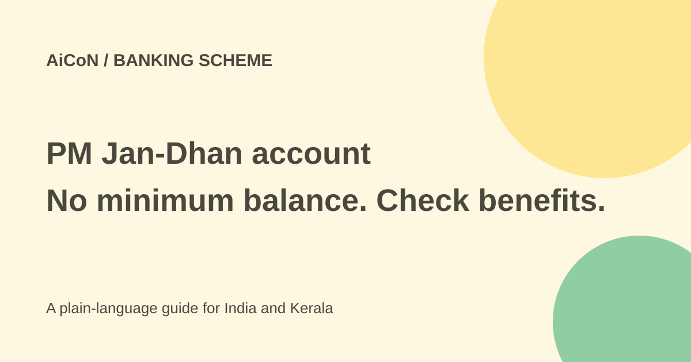

PM Jan-Dhan: zero-balance account and conditional benefits
PM Jan-Dhan Yojana helps unbanked adults access a basic bank account with no minimum-balance requirement. Its RuPay cover and overdraft have conditions. Opening an account does not automatically give you cash or an approved loan.

What is the account?
The Department of Financial Services describes PMJDY as access to a Basic Savings Bank Deposit account for unbanked people. The programme now focuses on every unbanked adult, rather than treating a bank account as a benefit automatically given to every household member.
A basic account can receive deposits and eligible government transfers. A zero-minimum-balance rule means you do not have to keep a set balance simply to maintain that basic account. It does not prove that every optional service or transaction is free.
Benefits and their limits
The current scheme features list a free RuPay debit card, accident insurance and access to an overdraft up to ₹10,000 subject to eligibility. An overdraft is borrowed money that must be repaid, not a government grant.
The official PMJDY page describes accident cover of ₹1 lakh, enhanced to ₹2 lakh for new accounts opened after August 28, 2018. The card's insurance has conditions. Ask the bank for the current policy, card-use requirements, covered events and claim procedure before depending on it.
This check did not verify the exact current transaction window for every RuPay policy. Old circulars are still linked on official pages, so an older 90-day rule should not be repeated as a universal current promise without checking your card's current programme.
How to apply in Kerala or elsewhere in India
- Go to a bank branch or an authorised Bank Mitra outlet. Verify the outlet with the bank before sharing identity documents.
- Tell the bank whether you already have a basic savings account. Ask which account rules apply to your situation.
- Get the current KYC document checklist and account-opening form from the bank.
- Read the account type, transaction limits, optional services and any charges. Do not accept a paid upgrade merely because it is presented with the form.
- Enter accurate contact and nominee details. Keep your acknowledgement and account records.
- Ask whether a RuPay card will be issued and how to activate it safely. Keep the PIN separate and private.
- For an overdraft, request the bank's eligibility and repayment terms in writing. Do not treat the maximum amount as automatic approval.
Government payments are separate
An account can be a route for a benefit payment, but the benefit scheme has its own eligibility and registration. Opening PMJDY alone does not establish that a pension, subsidy or cash transfer is due.
Check the particular programme through its official source. Ask the bank about account status or linking requirements without letting an unverified agent take control of your banking credentials.
Safe banking habits
Never share an OTP, PIN, password or card security details with a caller claiming to activate benefits. Do not pay someone who promises instant overdraft approval. Check unexpected credits, charges and messages through your own bank.
Keep statements and card records. If a card is lost, use the bank's official blocking route promptly. Ask how to report an account problem or a disputed charge through the institution's complaint process.
What changed since the original post?
The zero-minimum-balance benefit and conditional ₹10,000 overdraft remain supported. The accident-cover amount is tied to the account-opening boundary, and current policy conditions are left for the bank to confirm. No account was opened or personalised overdraft assessed.
Frequently asked questions
Will I receive ₹10,000 when opening?
No. It is a maximum conditional overdraft, not an automatic cash benefit.
Does zero balance mean every service is free?
No. Check the basic-account terms and any optional service charges.
Is accident cover unconditional?
No. Check your card's current insurance conditions with the bank.
Sources: Official current scheme features · Official PMJDY scheme page · Official programme portal. Checked 7 October 2026.